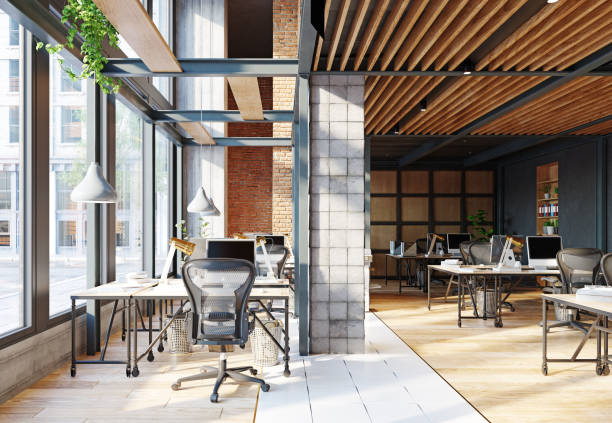
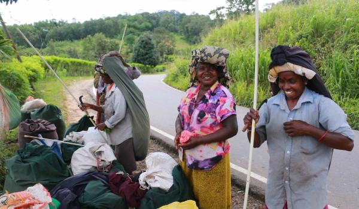
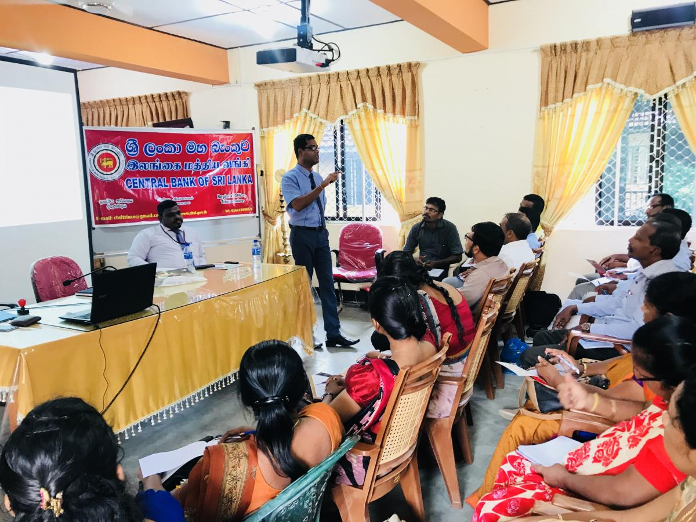

| Name of the offices and authorities | Pictures | Name of the offices and authorities | Pictures |
|---|---|---|---|
|
 Since the early antiquity Kegalle has been an important juncture in gateway to Upcountry. It is said that the “ Raja Mawatha” was existed in the Kelani valley and laid through villages Deewela, Evunugalla, Hettimulla via Arandara and Ruwanwella . Kegalle has obtained a salient position as center point in transportation with the macadamized road laid across joining Colombo and Kandy. Kegalle town is located in the Colombo - Kandy A1 road 78 Km distance form Colombo and 39 Km distance from Kandy. |
|
Our Mission"Our mission is to lead the kegalle district towards a sustainable development by making Kegalle District Secretariat the best institution of the island with an attitudinal change in officers of District Secretariat and Divisional Secretariats and coordinating all institutions at district, provincial and national levels with a view to achieving values of the district" |
|
 There are many historical archeological sites in the Kegalle Divisional Secretariat. The Jubilee Ambalama in Kegalle, Dawson House, Watura Raja Maha Viharaya, Makura Raja Maha Viharaya and Kaudugama Raja Maha Viharaya are some of them. It is said that King Walagamba had written the Tripitaka in the ash cave of Karadupana and the royal palace and tomb of Kusumasana Devi, a princess of Kegalle was located in Welimanthota. |
|

|